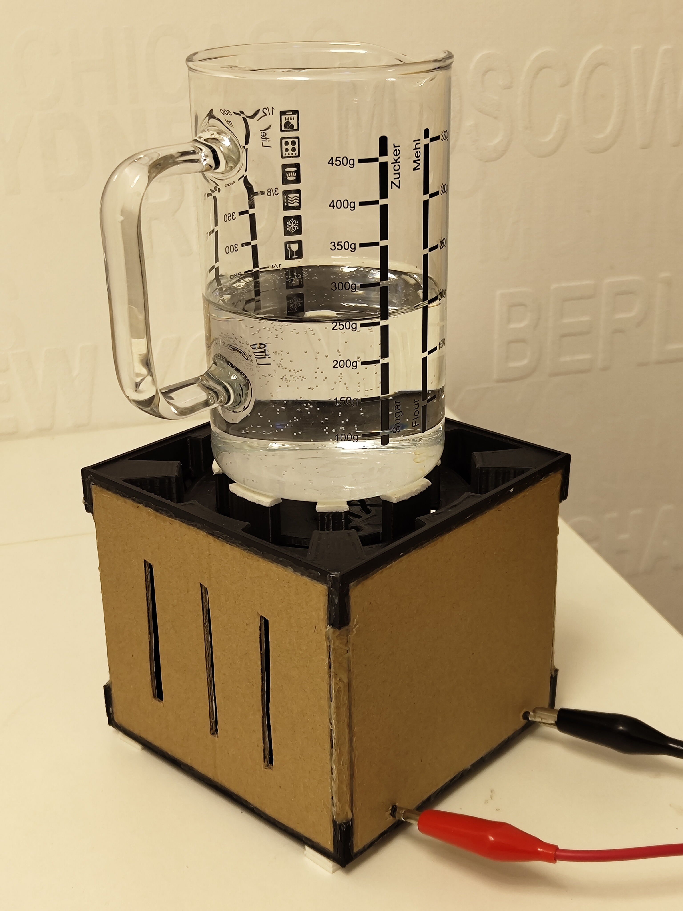
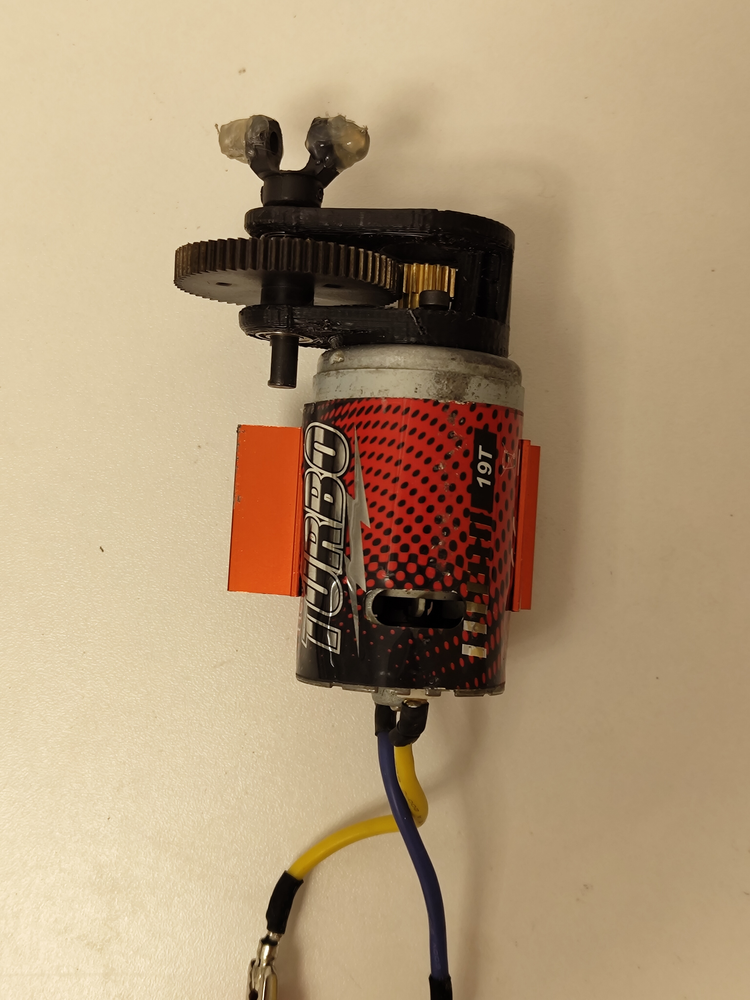
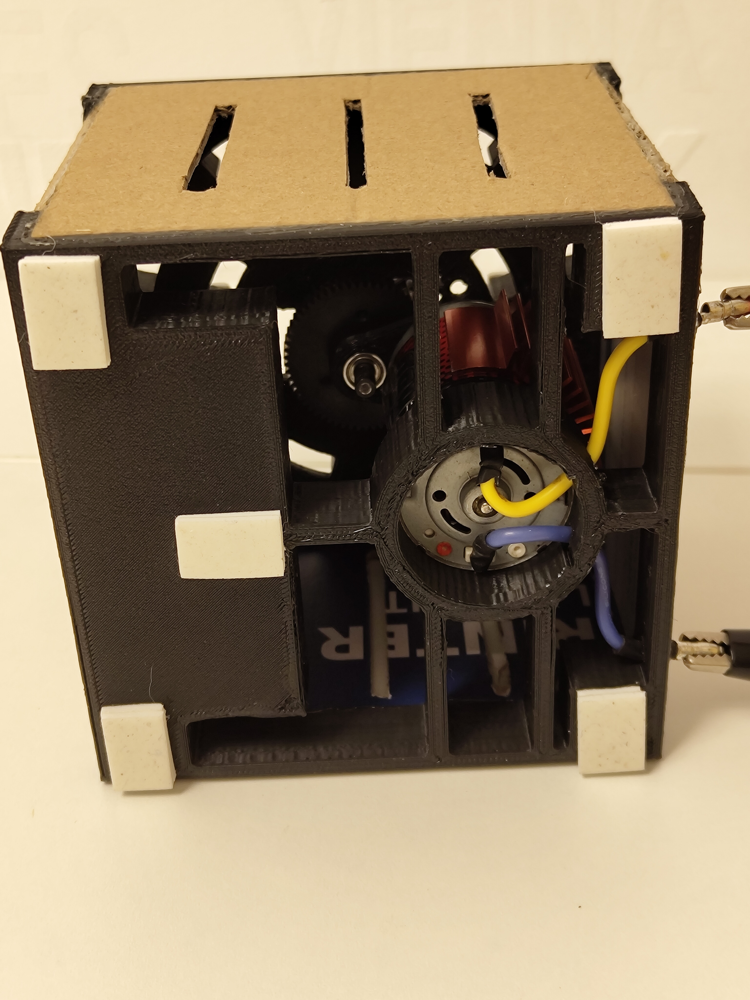

Stirrer

Description
The device is called a magnet stirrer and is as simple as it gets: a motor is spinning a magnet, this magnet holds onto another magnet, and the other magnet is therefore spinning. The result is a stirring machine which can elegantly stear liquid inside a container.
Mechanism
The core uses permanent magnets fixed on a fast spinning motor. I’ve used an RC-car brushless 12V motor which I salvaged from an RC remote car. Other than that no other parts are required except a power supply which you can make from a laptop charging cable, but be careful. Using resistors or regulators one can then adjust the power input of the motor for rotations per minute (RPM) adjustment. The speed adjustment is crucial and why this is, is described in the Limitations section.


Limitations
The distance of the rotating magnets compared to the stirring magnet should be adjustable as if you put them too close, the inner magnet will not keep centered, and if they are too far away the magnet won’t spin.
Powering the motor purely using some power supply is not enough to get it spinning as the startup has a high friction rate requiring 2-5x more power compared to being in the spinning state.
Future Improvements
- Having a manual gear system to adjust the magnet distance of the motor would be fabulous, but making gears is not that easy.
- The startup issue can be fixed by using some components that give off their charge quickly on trigger.
- Currently the power supply is not build in, which should be easy as the case has enough room.
- Additionally, a small compartment to store the stirring magnets would be nice to have.